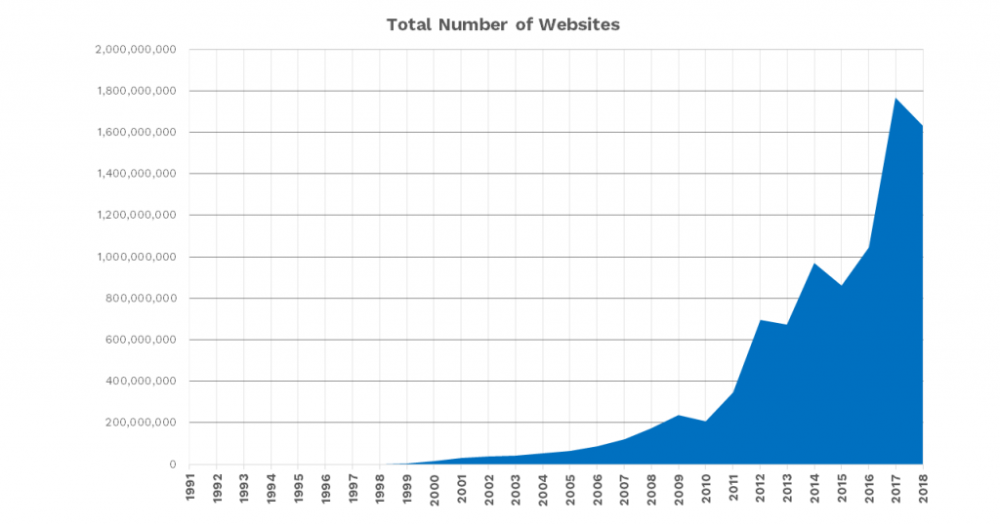
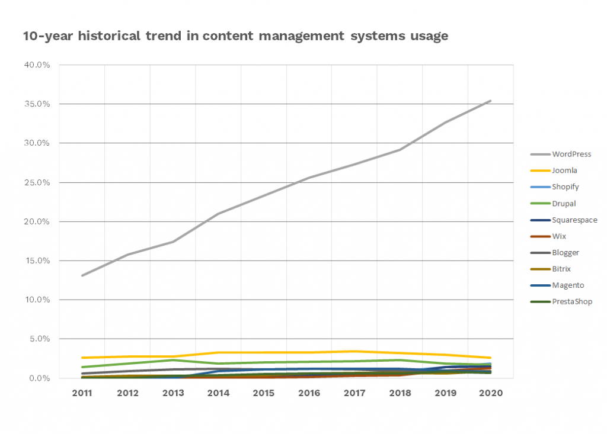
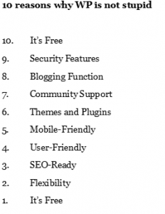
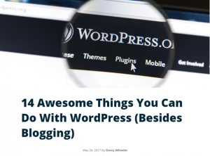
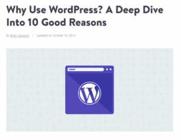

WP was invented in 2003
It wasn’t manufactured by a large, greedy mega-corporation hell-bent on taking over the planet.
Matt grew up playing saxophone in a time of jazz icons Joshua Redman and Chris Potter. It was also a time of eBay, Hotmail, Microsoft Windows 95 Plus Pack, which saw home ownership of computers more than doubled to 35%.
Well, Matt kind of did more than just play the sax. When in University of Houston, after his early years doing simple web-dev, Matt decided to fork b2/cafelog, the OG of blogs. Mike, from across the pond in Stockport, England, decided to join in too.
After all that forking, WordPress was born.
If you too, are extremely interested in what this early forking is all about : bit.ly/stc-wp2020
Dude, Do You Even WordPress?
Yep. Why only bench press when you can also WordPress? It’s cheaper (free!) and has more equipment than your local gym.
Depending on your advisor, there’s probably close to 1.3-1.5 billion websites alive and active today: bit.ly/36TVxW5

16+ years on, WordPress has gone from 2 founders to 325 million published sites (~25%) – Don’t take our word for it. Go on Forbes and do your own research: bit.ly/3971gtf
“So what” – you might ask?

Simple. Can’t you feel the FOMO building-up already?
“The entire rest of the world” is not just rapidly embracing the Internet, “the entire rest of the world” has also been using it to grow and develop ever more things with it. The best part about WP is the fact that it allows you jump on the bandwagon with one quick sign-up: bit.ly/2OnxDvT
You’ll also be signing-up here if you want a shortcut to becoming a WP Pro for 2 cups of teh tarik : bit.ly/stc-wp2020
Big numbers! But Is It Still FREE?
“What happened to free and open source? Tell me about it right now! “
Chill. We got you covered. Read on.
Well, WP is only stupid if it doesn’t work.
But it works, so it ain’t stupid.
There’s a reason why at least 25% of the Internet is using WordPress, in fact, we’ll show you 10 of them:

So here’s one click to sign-up and learn : bit.ly/stc-wp2020
Sunway Tech Club has a WordPress event
A workshop, that is!
We want to show you how awesome it really is! For less than a cost of buying a cup of boba – not to be confused with the Mandalorian.
You don’t have to be a Matt Mullenweg and Mike Little to set-up a WordPress website in 5 minutes, because these jokers already claimed they can: bit.ly/2uY39cO
Don’t.
Learn WordPress with us and you’ll be able to discover the tricks of industry, set-up, maintain the site without ever ****ing up again!
Click to make your dreams come true : bit.ly/stc-wp2020
Why Should You Join this Workshop?
How can you be sure that this is the right workshop for you?
We’ll tell you right now!


Think of WordPress as a drawing canvas and toolkit of painting tools. It’s everything a painter needs. Not saying that you’re the painter, but the analogy is that it’s everything you’ll need to:
WordPress and its many, many plugins and downloadable content is perfect for those users who:
Take the first step now and we’ll teach you how to build a site you can use forever! bit.ly/stc-wp2020
Who’s Your Trainer?
Meet CF Liew
If you can’t join the workshop because you don’t believe in WP, then at least join for our awesome trainer!
Here’s what you need to know about your personal Sherpa on the way to the peak of the WP mountain:
Liew is a Malaysian WordPress consultant, WP & Elementor meetup organizer, WordCamp speaker, and most proudly, self-professed “Geekpapa” of two.
He is also among the first discoverers of WordPress Beta. Wau!
Still want to know more? Just register and come and meet the man lah: bit.ly/stc-wp2020